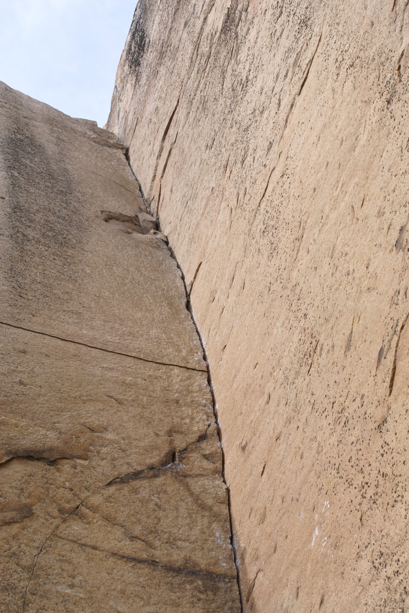

Kategori:Bohuslän
En led på klippan: Melange 7- Välsäkrad perfekt klättring vid färjeläget till Bohus Malmön
Copyright (C) Permission is granted to copy, distribute and/or modify this document under the terms of the GNU Free Documentation License, Version 1.3